好奇并不是数学和美食的唯一推动力——还有贪吃。
我是一个贪吃的人。我的食量很大，或者说曾经是这样，但是我不是什么大块头。我一刻不能忍受地燃烧着卡路里。
我的贪吃特性拓展到了数学，对自己想要的，不仅要有，还要有更多。
更多的数独游戏
我自己并没有真的弄懂“无线索数独”项目，但不会放弃它（见第三章）。只要我拿着一张纸坐下来，我就会开始画方格，并将它们分成不同的区域。在牙医办公室，听音乐会、演讲，看《每日秀》。在我周围的人一直都很宽容。
我最初的那些合作者们研究出7×7、8×8、9×9迷宫格谜题，但是我并不满意。这些谜题很少见，而且找出能成立的谜题并不容易，并且很难解开（都是些大难题），玩起来没什么意思。
我和几位新生[19]略微放宽了游戏规则。我们允许宫格中的区块仅由一个角相连接。你可能会回想起之前我们说过没有哪个4×4迷宫格有5个区域。现在允许有一角相连，我们就有了这样的迷宫格。
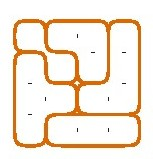
这里还有一个4个区域的迷宫格。
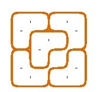
甚至还有一个2×2的迷宫格（不是很有趣）。
我们允许有空白方格，这样规则更宽松了，就像纵横填字游戏一样。看看这个游戏多有趣吧。这是个4×4迷宫格。
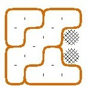
完整的4×4迷宫格中的数字之和是40，但是在这个迷宫格中，所有数字的总和要小于40，因为这里面有两个空白格。少了多少呢？很难说！
这里有3个区域，每一个区域数字之和是一样的，所以总和必须是3的倍数。这个总和不是39，因为两个空格所含数字之和一定大于1。
那么总和会是36吗？也不是。左上角那个区域的最大和可以是11（2个4，1个3），所以总和不会大于
3×11=33.
因此，消失不见的数字（在空白格那里）相加应该是7，也就是说它们应该是3和4。这样一来我们就知道
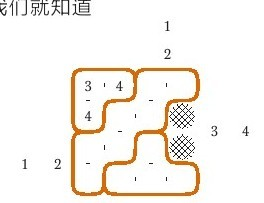
现在来看看中间这个区域。最顶端这一行是1个1和1个2，左侧列是1个1和1个2。相加之和为6。如此一来，中间区域的数字相加之和应该是5。有两种方法可以获得：
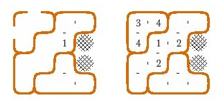
如果我们在相应的方格中将剩下的数字填进去，我们会看到其中有一个答案是对的，其他的不符合规则要求。
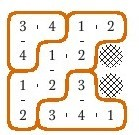
我又得出了更多这类迷宫格游戏。
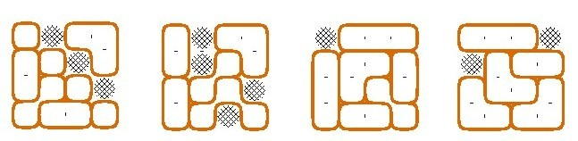
现在，让我们再做一些改变。如果迷宫格各个区域的数字之和可以不同，但必须都是素数又会怎么样呢？
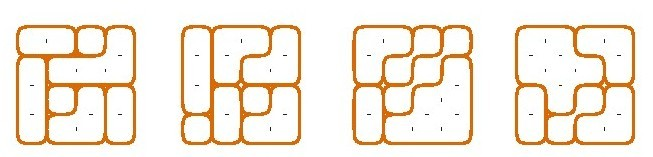
并不是只有我们发明了变形数独和智力游戏。数学家劳拉·塔曼和计算机科学家菲利普·赖利就有大量令人着迷不已的智力游戏[20]。
苹果馅饼
我为什么会开始烹饪呢？这故事说起来并不振奋人心。我的动机并不单纯，实际上还与人类几大原罪有关。
我真是个贪吃鬼。我爱吃，还是孩子时就吃得很营养。我的妈妈是个极好的厨师。但是我想要的总是比得到的多，特别是甜点，而所有甜点中，我最想要的是苹果馅饼。不是佐餐馅饼，不是餐厅里的馅饼，也不是蛋糕店里的馅饼，而是真正的、家庭自制的苹果馅饼。
我6岁时第一次吃到这种自制苹果馅饼。那时我在祖母家。我已经记不起它的味道如何了，但是我仍能回想起母亲解说制作秘诀时眼睛里的光芒。“我看着她做的，她在放上饼皮前用好几块黄油进行点缀！”
在我成长过程中，我的母亲做过几次苹果馅饼。每一个都是珍宝，但是太少了——在我动身去大学前每次只有3个或者4个苹果馅饼。它们好吃得惊人。苹果是秋季新鲜采摘的，酸甜可口，所以不需要用肉桂。馅饼的饼皮是金黄色的，刚一入口爽口松脆，之后溶入了黄油的味道。
我长大了，结婚了，开始经营自己的家庭，但自始至终，我都渴望再次吃到那种苹果馅饼。最终，我自己动手做。
成功来得很快，但这并不难理解。事实是，尽管苹果馅饼在美国文化中拥有传奇地位，但这个国家出售的大部分苹果馅饼都糟透了。一个新鲜的馅饼，酸味苹果加上一个自制饼皮用黄油或者猪油点缀，不管制作过程多差也一定会胜过商业产品。
这就意味着即使你从未做过馅饼，你也不会犯严重的错误。制作的主要困难在饼皮，但是我已经研究出一个稳妥可靠的方法。除了这个饼皮制作方法，下面这个食谱堪称标准。
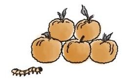
苹果馅饼
馅料
5个煮熟的苹果（大概会出5杯原料）
¼到杯糖
2汤匙黄油
½到1茶匙肉桂
柠檬汁，如果必要的话
可能会需要1茶匙面粉
脆壳
2杯面粉
杯猪油或者无盐黄油（1条）
水
饼皮是关键。我会在最后讨论它的准备和制作。假设你现在已经铺好底部的饼皮，并把它放在烙馅饼的烤盘上了。
苹果去核、去皮，切成薄片，放到饼皮里。撒上盐和肉桂。点上黄油。上面再铺盖上一层饼皮，以任何你喜欢的方式将它们的边缘密封好。在大约6个位置用刀猛戳进饼皮，扭动留下一个洞，用于释放蒸汽。在饼皮上撒上糖。
烤箱预热后，放入烤盘，以230摄氏度的温度烤15分钟，之后调成180摄氏度再烤35分钟。冷却，上桌。如果你愿意，可以配上香草冰激凌或者一块年份上好的切尔达干酪。
现在，说说脆壳。
在一个大碗中将面粉和盐混合，碗中放入黄油或者猪油，或者猪油和黄油的混合物。用面团分切机切好。
下一步，水。打开厨房水槽的冷水，使水慢慢滴流下来。一只手拿着装有混合物的碗，另一只手拿刀。水滴流进碗里的同时用刀搅拌。这么做的目的是让加入的水刚刚够，这样生面团会变成带干粉的小面块。用刀搅拌时不必用力过猛，但是不能让水聚集。如果水滴流过快，可以多次将碗从水龙头下移开。当你做完这些，生面团看起来仍然干爽。
这个制作方法通常需要用到5大汤匙的水。这个方法可能用的水大约就是那么多吧。
生面团看起来会很干，以至于你会以为当需要铺开面团的时候它们并没有黏在一起。事实上，它们可能不会黏在一起，但是相信我，这样是可行的。
撕下一片保鲜膜，铺在操作台上。将一半多一点的生面团放在薄膜上，再用一片保鲜膜盖住生面团。用擀面杖将生面团在两片薄膜之间铺开。将其大致擀成矩形[21]。
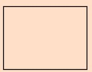
它看起来不会太好，也可能你一拿起它就散架了。
别把它拿起来。将上面的保鲜膜拿掉，将底下的面折起三分之一，再将上面的三分之一折下来。
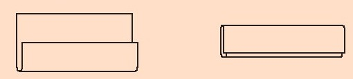
然后在水平方向上重复上述操作，一左一右折叠。
现在，更换最上面的保鲜膜，将生面团轻轻地铺开在一个盘子里。
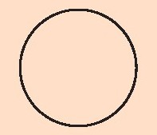
这一次它应该看上去比较圆了，并且生面团会黏连在一起。你这时应该可以将最上面的那层薄膜去掉，用下面的那层薄膜将它翻转到馅饼烤盘里去了，这样的饼皮不会断裂，令人满意。
馅饼的上层饼皮用相同的方法做。
这个方法会将每个饼皮铺开两次——通常情况下这么做不好，因为会使生面团变硬，但是显然，用这种方式做出来的饼皮很松软。我不确定到底是为什么，但是我猜是因为生面团很干。
说明：
·煮熟的苹果用的是酸苹果。我所知最好的品种是罗德岛产的绿皮苹果，但是很难在市面上买到。鲍德温镇和乔纳森的苹果也相当好，但是也很难买到。英国布拉姆列苹果好极了。我曾经用法国卡尔维尔白冬苹果做出很好吃的苹果馅饼，但是现在不是苹果的好时节，大部分商店都不出售用于烹饪的苹果。如果你心有疑虑，那就用混合剂。
·当你疲于挑选苹果的时候，柠檬汁和稍多些肉桂会助你一臂之力。奶酪也会起到相同的作用。应当用相当数量的、室温储藏的老切达干酪。
·吃过太多商店里出售的馅饼，我很不愿意在馅料中加面粉或者玉米淀粉。在这个制作方法中，如果你担心苹果太多汁，也可以加一些面粉。馅饼里适度地有些果汁我并不在意，如果加入面粉，在将馅料倒入饼皮前，要在一个碗里将苹果、糖、肉桂和面粉混合好。
·猪油是最好的。它的熔点比黄油的熔点高，能成功阻挡面粉进入饼皮松脆的内层。黄油有可能浸透面粉，导致饼皮变硬变厚。有人喜欢用一半黄油一半猪油，他们更喜欢黄油的味道，但是猪油的味道也不错，它的肉味与苹果是绝妙的搭配[22]。
你没说只言片语，但我知道你所思所想。这本书的内容应该是关于数学的，而实际上你所看到的都是涂鸦、智力题或者游戏。你想知道我什么时候才能认真严肃地说正题。
对于你的疑问我有两个答案。
第一个答案是我不打算一本正经地说事。我恰好不是什么严肃的人。如果你想要一本严肃的书，你会有很多种选择，我倒是有个书单可以给你参考。
第二个答案是我是认真的。涂鸦、智力题和游戏都是真正的数学。尽管它们外表轻率，但内在的思想是细致深沉的。确实有些哲学家争辩说所有的数学——排除语境因素——包括涂鸦、智力题和游戏。
而且，我想补充一点，那就是我现在谈及数学与烹饪之间的相应关系也是认真的。我用的类比法揭示出这两个领域都值得我们关注，对我们都有重要的影响。
当然，我不是在宣告这本书里的一切都意义深远。有些愚蠢的东西似乎时不时地混进来。